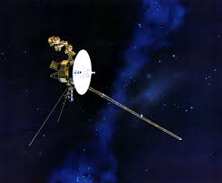
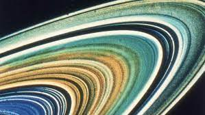
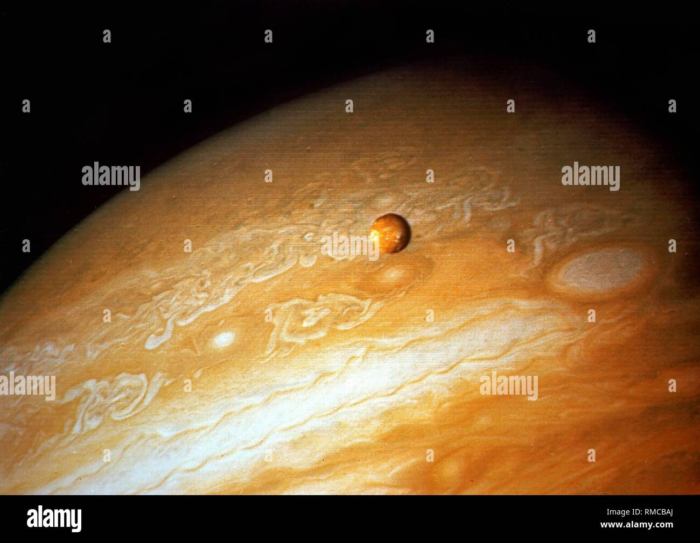
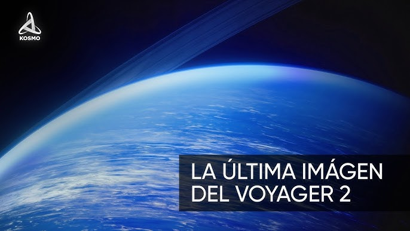
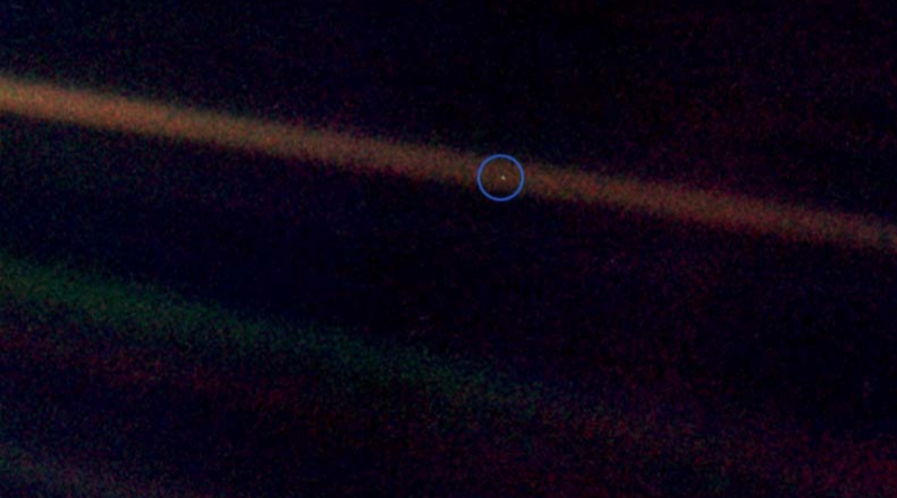

La sonda boyager
La sonda boyager a traves del espacio
    La Voyager es una misión espacial emblemática de la NASA que consiste en dos sondas espaciales, Voyager 1 y Voyager 2. Aquí tienes algunos datos clave sobre las sondas Voyager: Lanzamiento: Voyager 1 fue lanzada el 5 de septiembre de 1977, seguida por Voyager 2 el 20 de agosto de 1977. Ambas sondas fueron lanzadas desde Cabo Cañaveral, Florida, a bordo de cohetes Titan-Centaur. Objetivo: El objetivo principal de la misión Voyager era explorar los planetas exteriores del sistema solar, incluidos Júpiter, Saturno, Urano y Neptuno, así como sus lunas y anillos. Instrumentos y cargas útiles: Cada sonda llevaba una variedad de instrumentos científicos diseñados para estudiar la atmósfera, la magnetosfera, los campos magnéticos, los anillos, las lunas y las superficies de los planetas visitados. También llevaban cámaras para tomar imágenes de alta resolución. Grand Tour del Sistema Solar: Las Voyager llevaron a cabo un "Gran Tour" del sistema solar exterior, realizando encuentros cercanos con Júpiter (Voyager 1 en 1979, Voyager 2 en 1979), Saturno (Voyager 1 en 1980, Voyager 2 en 1981), Urano (Voyager 2 en 1986) y Neptuno (Voyager 2 en 1989). Logros notables: La misión Voyager ha proporcionado algunas de las imágenes más detalladas y hermosas de los planetas exteriores y sus lunas. Además, las Voyager realizaron descubrimientos importantes, como volcanes activos en Io (una luna de Júpiter), anillos incompletos alrededor de Neptuno y la Gran Mancha Oscura en Neptuno. Actualmente: Ambas sondas continúan funcionando y enviando datos a la Tierra desde los límites del sistema solar. Se espera que las Voyager continúen operando hasta que sus suministros de energía se agoten, lo que probablemente ocurra en las próximas décadas. Mensaje interestelar: Cada sonda lleva a bordo el "Disco de Oro", un disco de cobre bañado en oro que contiene imágenes y sonidos de la Tierra, así como instrucciones para su reproducción, destinado a comunicar información sobre la Tierra a cualquier forma de vida inteligente que pueda encontrar las sondas en el futuro.